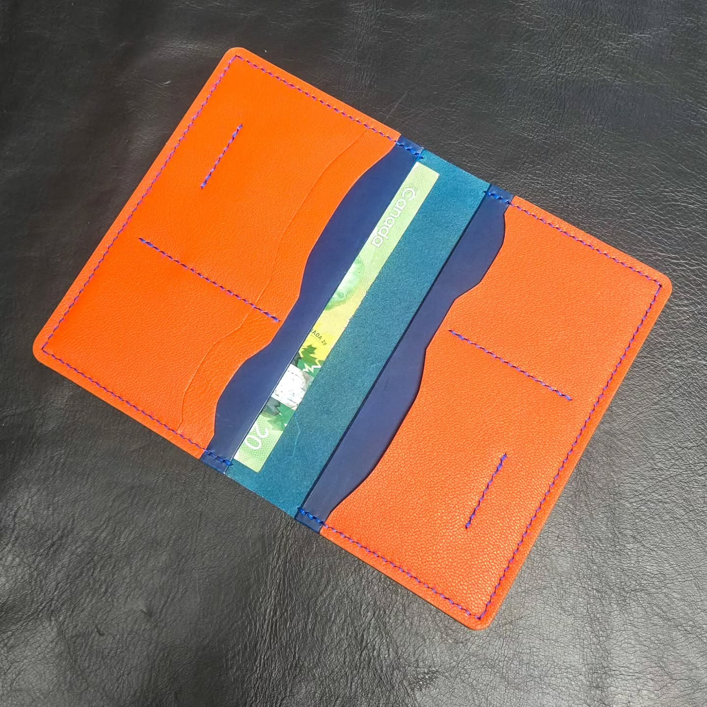

- Starting price
- $ CAD
- Leather
- While most pieces are made to order, the featured piece has a Royal blue exterior built from Full-Grain Buttero leather produced by the Conceria Walpier tannery in Italy. The interior is crafted from vibrant Orange Alran Sully, Vegtanned in France.
- Hardware / thread
- Bright electric-blue Vinymo No.5, saddle-stitched by hand
- Dimensions
- Bifold · 6 card slots · two bill pockets
- Typical build time
- 4–6 weeks
The Sentinel started as a wallet I cut for a friend to fit a few cards more than the Clasic bifold. The MkII version differs from its predecessor as it was designed to fit two passports, cash, and travel documents. The Mk.II is the version you want if you need a larger wallet or an all-in-one travel solution.
Each panel of the Sentinel MkII can be customized to your preffered leather or colorway. The featured piece boasts a royal blue buttero exterior and when opened; displays pebbled orange alran with two buttero pockets in the centre. Saddle-stitched in a bright electric-blue thread (vinymo No.5) — so the stitching acts as decoration as well as structure. The Rogue Artisan maker's mark, is embossed into the lower corner of the exterior.
The Sentinel MkII features 6 card pockets; 3 pockets horizontally oriented and 3 vertically. Two central bill pockets sized to canadian cash, or large enough to slide in a passport. Edges are sanded, burnished with tokonole, and sealed with beeswax.
Made to order · Customizeable to your preference